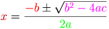

De: La Frikipedia, la enciclopedia extremadamente seria.
De: La Frikipedia, la enciclopedia extremadamente seria. De: La Frikipedia, la enciclopedia extremadamente seria.
| De la serie tribus urbanas del mundo: | |||
| Científico loco | |||
| |||
| Hábitat | Mundo | ||
|---|---|---|---|
| Inteligencia | Total (100% peligrosa) | ||
| Frase favorita | Voy a dominar al mundo | ||
| ¿Peligroso? | Es mejor no verlos | ||
| Obsesión | Destruir el mundo | ||
| Notas | alejarse | ||
Ser friki ultramarginado socialmente hasta tal punto que incluso no se relaciona con otros científicos que duerme de 3 a 4 horas diarias. Suele conspirar individualmente para dominar el mundo con proyectos tipo revivir a los muertos, crear un arma capaz de destruir planetas enteros o crear criaturas superiores a sus ordenes. Las característics de estos científicos son ;que el 90% no tienen padres y han sido creados en laboratorios supersecretos por otros científicos locos, no tienen cerebro; tienen un ordenador ultraavnzado hecho de partículas fotónicas-magnéticas que simulan ser un cerebro normal y cualquiera. Están como su nombre indica; como una puta cabra y tienen un coeficiente intelectual medio de 150. Viven en laboratorios viejos y semidestruidos, laboratorios pequeños normales o laboratorios megaavanzados con materiales procedentes del exterior de la tierra. Ellos són los principales fabricantes de drogas nuevas y con un efecto veinticatorcemil mayor que las normales.
Si algún dia dos de estos científicos se cruzan pueden pasar dos cosas:
ADVERTENCIA: si conoce algún caso de científico loco, intente descubrir dónde trabaja y cuando lo haga quemelo todo.
Su pelo, usualmente tiende a ser pelirrojo ,gris o pelado. Mientras mas largo, mas loco es el cientifico. Dependiendo de la cantidad de mechas, es su nivel de locura, por ejemplo, uno con 5 mechas es capaz de destruir una ciudad en segundos. Los pelados, normalmente son pacificos, pero si se ponen una peluca...
Nunca esta peinado, demostrando su clara rebeldia (Cuak!) y tampoco lo lavan, porque desperdician tiempo en el que pueden planear la destrucción mundial.
Todas, pero TODAS, (Inclusive los pelados) tienen ojeras, de tanto Argentum trabajo nocturno en proyetos malvados. A causa de esto, también presentan legañas en los ojos, producto de falta de sueño.
Pecas, abundantes pecas, 100% naturales. Representan la edad de ellos, divida a el peso de una bola de boliche en neptuno. Mejor dicho en este calculo:

Su cara, con forma cuadrada, les permite captar mejor las imagenes reproducidas por sus monitores, de su Pr0n proyecto malvado.
Sus orejas grandes y peludas, le permite captar mejor cualquier tipo de sonido y mantenerlos calentitos durante el invierno.
Se rumorea, que existe la auséncia de dientes. Esto, se debe, a la falta de alimentación presentada, de esa manera, el calcio de los dientes se va a otro lugar mas útil, como las manos
Sus cuerpos están físicamente subdesarrollados porque sólo se alimentan de productos artificiales que ellos mismos se fabrican, suelen ser de pequeña estatura, encogidos y con joroba, cualquier niño de 5 años les podría pegar una buena paliza.
Bata blanca sucia sin nada por debajo, guantes blancos de látex y gafas de culo de vaso.
Reconozcámos que en cualquier prueba física son tan patosos como un cirujano con parkinson operando con una llave inglesa a un paciente, pero mentalmente son tan superiores como un Lvl 80 a un Lvl 1 en el WoW.
Esto, se debe a su gran capacidad fonetica, con la cual, pueden hablar cada idioma del mundo con un acento perfecto, a que saben hablar en binario y hablar en binario a la reversa y su gran capacidad en cuanto a los tests mentales. El record, de Da Vinci, uno de los mas locos de los científicos locos, es de 99% de efectividad en tan solo 1 minuto.
Su cerebro, esta diseñado perfectamente para jugar videojuegos diseñar aparatos malevolos.
Los científicos locos actuan solos, usan su superinteligencia mental para el mal y corren rumores de que hay un científico loco con 7 mechas, está desarrollando un nuevo terminator capaz de superar un gritón de veces la potencia del LHC, hecho de: bolis bic, flores de artificiales de los chinos y de sus propios productos orgánicos usados como pegamento.
Normalmente cuando hacen algo lo hacen anónimamente para seguir planeando planes malévolos sin que los detecten (a no ser de que ya hayan dominado el mundo claro), nunca dejan pistas. Son muy listos porque conocen a la policía demasiado bién (muchos de ellos suelen ser expolicias corruptos que han ido cada vez volviendose peores hasta que acabaron siendo científicos locos).
EN RESUMEN: son enfermos mentales con un coeficiente intelectual tan alto como el monte everst.
Autor(es):